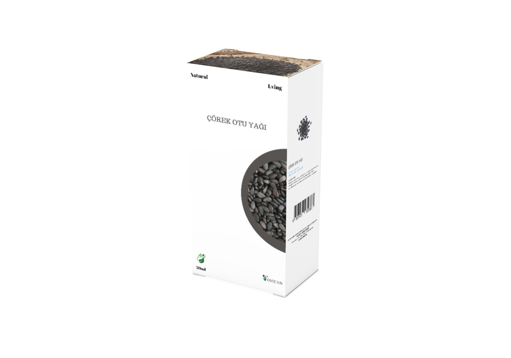

Acı Badem Yağı
Cildi derinlemesine nemlendirerek kuruluğu giderir. Saçların dökülmesini önlemeye ve saçlara parlaklık kazandırmaya yardımcı olur. Cilt tonunu eşitleyerek lekelerin görünümünü azaltabilir. Kırışıklık ve ince çizgileri azaltarak cilt yaşlanmasını yavaşlatır.
₺505,00
Anason Yağı
Anason Yağı: Sindirimi destekleyerek mide rahatlamasına yardımcı olur. Solunum yollarını açarak öksürük ve bronşit gibi sorunları hafifletir. Kas ağrılarını ve spazmları azaltıcı bir etki gösterebilir. Rahatlatıcı özellikleriyle stresi hafifletir ve uyku kalitesini artırır.
₺523,00

Çay Ağacı Uçucu Yağı
Çay ağacı yağı, antibakteriyel özellikleri sayesinde sivilce ve akneleri azaltarak cildin temizlenmesine yardımcı olur. Ayrıca, mantar enfeksiyonlarına ve saç derisindeki kepek sorunlarına karşı etkili bir doğal çözüm sunar.
₺836,00

Çörek Otu Yağı
Çörek Otu Yağı: Bağışıklık sistemini güçlendirerek vücudu hastalıklara karşı korur. Antioksidan özellikleriyle cilt sorunlarını ve iltihapları hafifletir. Saç dökülmesini azaltarak saç sağlığını destekler. Kan şekerini dengelemeye ve sindirim sistemi sağlığını iyileştirmeye yardımcı olabilir.
₺356,00
Defne Yağı
Defne Yağı: Kas ve eklem ağrılarını hafifletmeye yardımcı olur. Saç derisini besleyerek saç dökülmesini azaltır ve saçların daha güçlü uzamasını sağlar. Antiseptik özellikleri sayesinde cilt enfeksiyonlarını önleyebilir. Stres giderici ve rahatlatıcı etkisi ile gerginliği azaltır.
₺356,00
Gül Uçucu Yağı
Gül Yağı: Cildi nemlendirerek yumuşatır ve yaşlanma belirtilerini azaltır. Sivilce ve cilt tahrişlerini yatıştırarak cildin daha sağlıklı görünmesini sağlar. Rahatlatıcı etkisiyle stres ve anksiyeteyi hafifletir. Cildin elastikiyetini artırarak kırışıklık oluşumunu engellemeye yardımcı olabilir.
₺356,00

Hindistan Cevizi Yağı
Hindistan Cevizi Yağı: Cildi derinlemesine nemlendirerek kuruluğu önler ve cildin yumuşak kalmasını sağlar. Saçları besleyerek kırılmaları azaltır ve saçlara parlaklık kazandırır. Antibakteriyel özellikleri sayesinde cilt enfeksiyonlarını önler. Cilt bariyerini güçlendirerek nemin korunmasına yardımcı olur.
₺356,00
Karanfil Uçucu Yağı
Karanfil Yağı: Doğal bir ağrı kesici olarak diş ağrılarını hafifletir. Antiseptik özellikleri sayesinde enfeksiyonlara karşı koruma sağlar. Kas ve eklem ağrılarını hafifletmek için kullanılabilir. Stresi azaltarak rahatlatıcı bir etki gösterir.
₺356,00
Kekik Yağı
Kekik Yağı: Güçlü antibakteriyel özellikleri sayesinde enfeksiyonlara karşı koruma sağlar. Solunum yollarını açarak öksürük ve soğuk algınlığı belirtilerini hafifletir. Sindirimi destekler ve gaz giderici özelliklere sahiptir. Antioksidan özellikleriyle bağışıklık sistemini destekler.
₺356,00
Lavanta Öz Yağı
Lavanta Yağı: Cilt tahrişlerini yatıştırarak sivilce ve kızarıklıkları azaltır. Sakinleştirici etkisiyle stresi ve anksiyeteyi hafifletir. Uyku kalitesini artırarak rahat bir uyku sağlar. Antiseptik özellikleri sayesinde küçük yaraların iyileşmesine yardımcı olabilir.
₺356,00
Limon Uçucu Yağı
Limon Uçucu Yağı: Ciltteki yağlanmayı dengeleyerek sivilce oluşumunu azaltır. Enerji veren kokusuyla zihinsel netliği artırır ve konsantrasyonu destekler. Antibakteriyel özellikleri sayesinde mikropları öldürmeye yardımcı olur. Cildi aydınlatarak daha sağlıklı bir görünüm kazandırır.
₺356,00
Tıbbı Nane Uçucu Yağı
Nane Yağı: Kas ve baş ağrılarını hafifletici bir etkiye sahiptir. Sindirimi destekler ve mide bulantısını gidermeye yardımcı olur. Solunum yollarını açarak rahatlatıcı bir etki sağlar. Enerji ve zindelik verici özellikleriyle yorgunluğu azaltır.
₺356,00
Nioli Yağı
Nioli Yağı: Antibakteriyel özellikleriyle cilt enfeksiyonlarını önlemeye yardımcı olur. Solunum yollarını açarak öksürük ve soğuk algınlığı belirtilerini hafifletir. Cilt sağlığını iyileştirir ve sivilceleri azaltabilir. Kas ağrılarını hafifletici özelliklere sahiptir.
₺356,00
Okaliptus Uçucu Yağı
Okaliptüs Yağı: Solunum yollarını açarak öksürük ve soğuk algınlığı belirtilerini hafifletir. Kas ve eklem ağrılarını hafifletici bir etkiye sahiptir. Antibakteriyel özellikleriyle enfeksiyonlara karşı koruma sağlar. Zihinsel yorgunluğu azaltarak odaklanmayı artırır.
₺356,00
Tıbbi Papatya Uçucu Yağı
Papatya Yağı: Cilt tahrişlerini ve iltihaplanmayı hafifleterek cildin yatışmasına yardımcı olur. Sakinleştirici etkisiyle stresi azaltır ve uyku kalitesini artırır. Antiseptik özellikleri sayesinde küçük yaraların iyileşmesine katkı sağlar. Ciltteki kızarıklıkları ve sivilceleri azaltır.
₺356,00
Tatlı Badem Yağı
atlı Badem Yağı: Cildi derinlemesine nemlendirerek kuruluğu giderir. Saçları besleyerek daha güçlü ve parlak olmalarını sağlar. Cilt tonunu eşitleyerek renk düzensizliklerini azaltır. Tırnakları güçlendirerek kırılmalarını önlemeye yardımcı olur.l
₺356,00
Yasemin Yağı
Yasemin Yağı: Cildi nemlendirerek elastikiyetini artırır ve kuru bölgeleri yatıştırır. Rahatlatıcı kokusuyla stresi ve anksiyeteyi hafifletir. Duygusal denge sağlar ve ruh halini iyileştirir. Cilde canlılık kazandırarak daha genç bir görünüm elde edilmesine yardımcı olur.
₺356,00
Bioterra Organik Biberiye Uçucu Yağı 5 ml
Bioterra Organik Biberiye Uçucu Yağı 5 ml
₺356,00